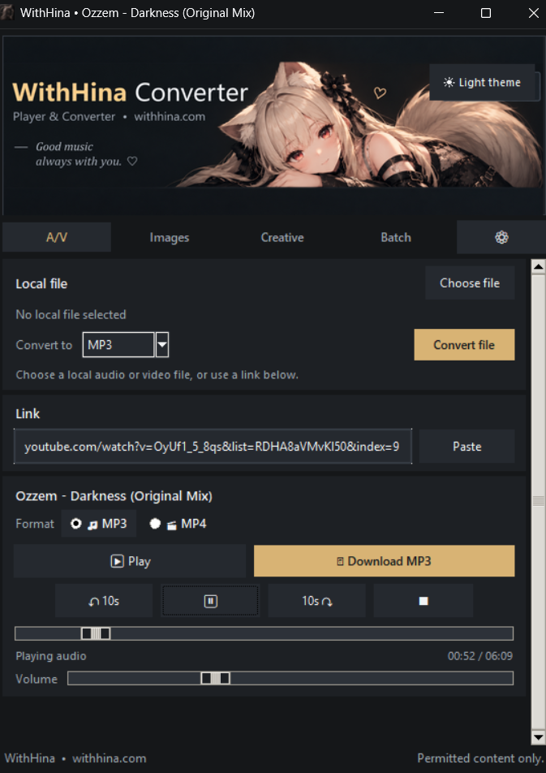

AUDIO & VIDEO
Converta e extraia.
MP3, WAV, FLAC, M4A, OGG, MP4, WebM, MKV e MOV. Extraia áudio de vídeo e escolha o formato de saída.
MP3FLACMP4WebM
WITHHINA · MEDIA & CREATOR TOOLKIT
Eu cuido do resto.
Converta áudio, vídeo e imagens em uma interface direta. No app para Windows, trabalhe também com links compatíveis, processamento em lote e ferramentas para arquivos criativos.
Conversão por link está disponível no app desktop.

UM APP, VÁRIAS FERRAMENTAS
O WithHina foi organizado por tipo de trabalho. Você abre o arquivo, escolhe o resultado e vê apenas os controles que fazem sentido para aquela tarefa.
AUDIO & VIDEO
MP3, WAV, FLAC, M4A, OGG, MP4, WebM, MKV e MOV. Extraia áudio de vídeo e escolha o formato de saída.
IMAGES
PNG, JPEG, WebP, BMP, TIFF, ICO e AVIF, com resize, qualidade e tratamento de transparência quando o formato exigir.
CREATIVE
Inspecione PSD/PSB, exporte a composição achatada e extraia camadas em PNG com transparência. Suporte inicial a recursos Live2D.
BATCH
Monte uma fila com múltiplos arquivos e deixe o WithHina cuidar das conversões sem repetir o mesmo processo manualmente.
WEB OU APP?
O conversor web continua simples e local. Para links, imagens, formatos extras e ferramentas de criação, use o WithHina no Windows.
Envie áudio ou vídeo do seu dispositivo e extraia MP3 diretamente no navegador.
Mais formatos, player integrado, links compatíveis, imagens, Batch e ferramentas Creative em uma única interface.
WITHHINA FOR WINDOWS
Audio & Video, Images, Creative e Batch, com player integrado e conversão por links compatíveis no aplicativo. Compra única, sem assinatura.
Preço no Brasil
Pagamento único · sem assinatura
Comprar o appCompra única · app para Windows.
WITHHINA WEB
Escolha um áudio ou vídeo local. A conversão acontece no navegador; links e o toolkit completo ficam no app desktop.
No modo Web, seus arquivos locais não são enviados ao backend do WithHina.
SEM COMPLICAÇÃO
No app, cada categoria mostra apenas as opções relevantes para o arquivo carregado.
O WithHina identifica se você está trabalhando com áudio, vídeo, imagem ou arquivo criativo.
Defina formato, qualidade, resize ou ação específica sem navegar por controles que não se aplicam.
Salve o resultado, abra a pasta ou coloque mais arquivos na fila para processamento em lote.
PRIVACIDADE PRIMEIRO
No conversor Web, arquivos locais são processados no navegador. No app, o processamento local continua sendo a base das ferramentas de arquivo. Recursos que dependem de fontes externas podem exigir comunicação de rede. Leia a política completa.